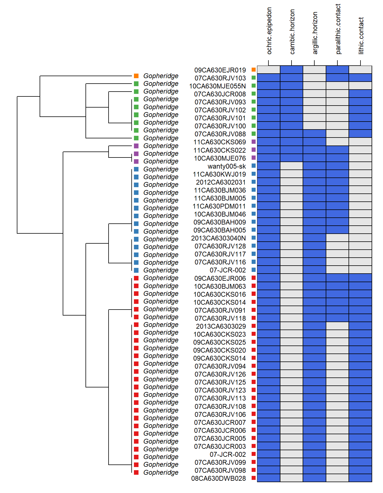
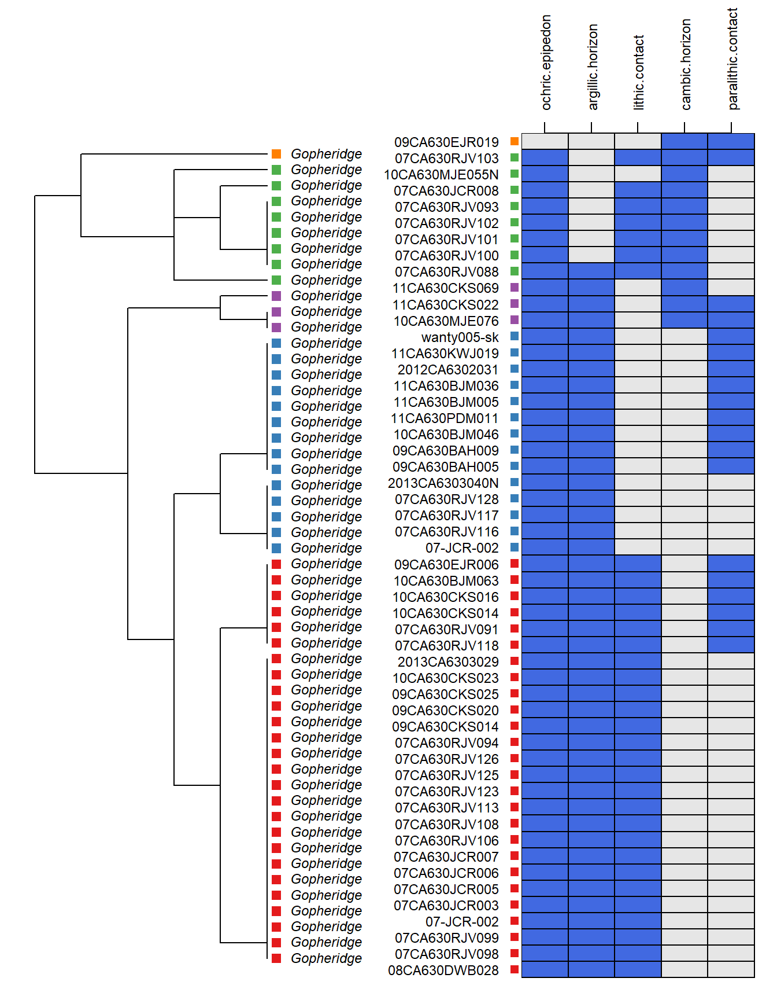
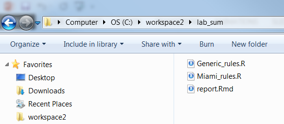
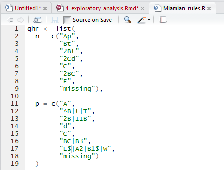
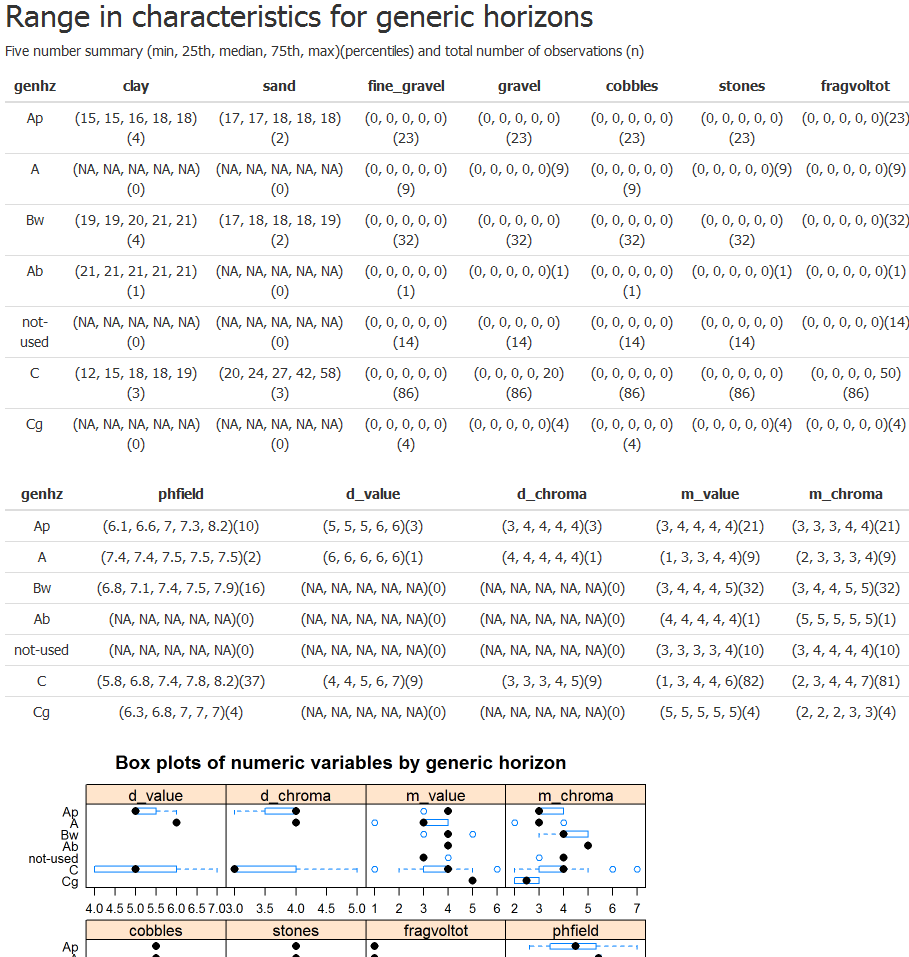

Chapter 5 Working with Data in R
5.1 Summarizing Data
Now that you’ve loaded some data, you can look at additional ways to summarize data elements and filter the SPC to specific sites of interest.
The base R table() function is very useful for quick summary operations. This function can be combined with other functions, such as sort() and is.na() or !is.na() (is not NA). Follow along with your own data.
# load required packages
library(aqp)
library(soilDB)
data("gopheridge", package = "soilDB")
# for these examples, we use the gopheridge dataset as our "selected set"
pedons <- gopheridge # fetchNASIS() # you can use fetchNASIS
# summarize which soil taxa we have loaded
table(pedons$taxonname)
# sort results in descending order
sort(table(pedons$taxonname), decreasing = TRUE)
# could do the same thing for taxonomic subgroups or any column of the SPC at the site or horizon levels
table(pedons$taxsubgrp)
sort(table(pedons$taxsubgrp), decreasing = TRUE)5.2 Filtering
A variety of methods are available to subset or filter data sets, be they simple data.frames or vectors, or something more complex like a spatial object or a SoilProfileCollection.
STUB: expand
5.2.1 Logical Operators
%in%Equivalent toIN ()in SQL. Can usec()to concatenate lists of vectors.- Example:
pedons$taxpartsize %in% c('loamy-skeletal', 'sandy-skeletal')
- Example:
!=Not-equal-to character “string.”==Note in the example above that R uses a double equal sign as “equal to.”<, >, <=, >=Less than, greater than, less than or equal to, and greater than or equal to.
5.2.2 Pattern Matching
The following examples use the grep() function to pattern match within the data, create an index of the SoilProfileCollection for records that match the specified pattern within that column, and then use that index to filter to specific sites and their corresponding profiles.
Patterns are specified using regular expression (REGEX) syntax.
This process can be applied to many different columns in the SPC based on how you need to filter the data. This example pattern matches on the tax_subgroup column, but another useful application might be to pattern match on geomorphology or parent material.
Note that the grep() below also has an invert option, which is specified as either TRUE or FALSE (default false). This option is very useful for excluding the results of the pattern matching process by inverting the selection.
Say we want to see what the variation of particle size classes are within a specific subgroup? We can use grep() to create a row index, then apply that index to the SoilProfileCollection.
# create a numeric index for pedons with taxsubgroup containing 'typic'
idx <- grep('typic', pedons$taxsubgrp, invert = FALSE, ignore.case = TRUE)
idx
# use square bracket notation to subset 'typic' soils in `subset1` object
subset1 <- pedons[idx, ]
subset1
# or use the index directly to summarize taxpartsize for 'typic' soils
sort(table(pedons$taxpartsize[idx]), decreasing=TRUE)Another method is to specify a criteria using the which() function, where you pass any logical vector or expression. grepl() is the logical (TRUE/FALSE) version of grep, that always returns a vector of equal length to input, instead of the numeric index of TRUE. which(grepl('lithic', pedons$taxsubgrp)) is the same as grep('lithic', pedons$taxsubgrp).
Do a quick graphical check to ensure that the “typic” profiles are selected.
Plot them in R using the SoilProfileCollection “plot” method (e.g., specialized version of the generic plot() function).
# adjust margins
par(mar=c(1,0,0,1))
# plot the first 10 profiles of subset1
# limit plotting to a depth of about 60cm
plot(subset1[1:10, ], label = 'site_id', max.depth = 60)
title('Pedons with the word "typic" at subgroup-level of Soil Taxonomy', line=-2)For more information on using regular expressions in grep() for pattern matching operations, see: Regular-expression-syntax.
5.2.2.1 Additional syntax options for REGEX pattern matching
|Equivalent to “or” in SQL.- Example:
grep('loamy | sandy', pedons$taxpartsize)
- Example:
^Anchors to the left side of the string.- Example:
grep('^sandy', pedons$taxpartsize).
- Example:
$Anchors to the right side of the string.- Example:
grep('skeletal$', pedons$taxpartsize).
- Example:
5.2.2.2 Resources for learning about regular expressions
- https://regex101.com/ & https://regexr.com/ - Online regular expression testers
- http://www.regular-expressions.info/quickstart.html - One-page regular expression quick start guide
5.2.3 Filtering Data by Logical Criteria with aqp::subset
You can index many R objects using numeric or logical expressions as above. There are also methods that make this process a little easier.
Here, we supply two logical expressions to find “Alfisols” and obsdate before 2010. Larger size of the POSIXlt internal value is equivalent to later in time. We use the subset method, where we specify a data (pedons) object, in this case a SoilProfileCollection,then we can write expressions for the columns in that object.
subset2 <- subset(pedons, grepl("alfs", taxsubgrp) &
obs_date < as.POSIXlt("2010-01-01"))
# check taxonomic range of particle size classes in the data
# overwhelmingly these are described as loamy-skeletal ultic haploxeralfs
sort(table(subset2$taxsubgrp), decreasing=TRUE)
sort(table(subset2$taxpartsize), decreasing=TRUE)
# a double equal sign '==' is used for exact character or numeric criteria
subset3 <- subset(subset2, taxpartsize == 'loamy-skeletal')
table(subset3$taxpartsize)
par(mar=c(0,0,2,1))
plotSPC(subset3[1:12,], print.id = FALSE)
title('Loamy-skeletal Ultic Haploxeralfs')5.2.4 Extracting Site and Horizon Data
SoilProfileCollections are designed to be dismantled so they can work more easily with either site or horizon data.
The SoilProfileCollection has a slot for site-level data and a slot for horizon-level data.
You can reference these slots using the site() and horizons() functions within the AQP package.
# extract site data from SPC into dataframe 's'
s <- site(pedons)
names(s)
# extract horizon data from SPC into dataframe 'h'
h <- horizons(pedons)
names(h)You can also use these functions when referencing the data within an SPC to specify that you want to look specifically in the site or horizon data.
5.2.5 Review of Data Checks Run by fetchNASIS()
Now that you’ve loaded some data and learned a little about how to filter data in the SPC, you can quickly review some of the get() functions used to track data issues detected in the process of loading data back to the NASIS records in your selected set.
get('sites.missing.pedons', envir=soilDB.env)
get('dup.pedon.ids', envir=soilDB.env)
get('bad.pedon.ids', envir=soilDB.env)
get('bad.horizons', envir=soilDB.env)# example of pedon_id returned
#[1] "2011MT0810001" "2011MT0810009" "2011MT0810015" "2011MT0810027" "2011MT0810034"
idx <- subset((! pedons$pedon_id %in% get('bad.pedon.ids', envir=soilDB.env))
pedons <- pedons[idx, ]Another useful function is dput(), which concatenates a variable. It converts something like this:
"2011MT0810001" "2011MT0810009" "2011MT0810015" "2011MT0810027" "2011MT0810034"
into a string like this that can be used again as R code, :
c("2011MT0810001", "2011MT0810009", "2011MT0810015", "2011MT0810027", "2011MT0810034").
Such a string can be copied and then pasted as a comma-delimited string or could be used as string for NASIS list queries. The dput() function is also helpful when sending questions or examples to colleagues via email.
5.3 Getting Additional Data: Extended Data Functions
Additional data related to both site and horizon information can be fetched using the get_extended_data_from_NASIS() function.
This data is not automatically brought into a SoilProfileCollection because these data elements are typically related to the site or horizon data in one-to-many relationships.
For example, multiple diagnostic features could exist within one pedon. Below is a summary of additional information that can be readily brought into R from your NASIS selected set via the get_extended_data_from_NASIS() function.
# fetch extended site and horizon data
e <- get_extended_data_from_NASIS_db()
### site and pedon related extended data
# vegetation data summary
colnames(e$ecositehistory)
# diagnostic features
colnames(e$diagnostic)
# surface rock fragments
colnames(e$surf_frag_summary)
# geomorphic description
colnames(e$geomorph)
# taxonomic history data
colnames(e$taxhistory)
# linked photo stored in site textnotes
colnames(e$photo)
# site parent materials
colnames(e$pm)
### horizon related extended data
# rock fragments
colnames(e$frag_summary)
# soil texture modifers
colnames(e$texmodifier)
# soil structure data
colnames(e$struct) The “Geomorphic description” and “parent materials” attributes are important soil data.
They can be useful handles for exploring other data. The soilDB package flattens the nested table structure of parent material and geomorphic description within NASIS into single strings for each site-level record. The pattern matching concepts demonstrated above select profiles based on parts of these strings.
5.3.1 Deriving Thicknesses of Diagnostic Features
5.3.1.1 Boolean diagnostic feature columns in the site data
If diagnostic features are populated in the pedon diagnostic features table in NASIS, then Boolean (TRUE or FALSE) fields are created for each diagnostic feature in the data brought in by soilDB. These fields can be readily used to model the presence or absence of a diagnostic soil feature by extracting the site data.
The following is an example of how you could use the diagnostic features (if populated!) from the extended data to determine the thickness of a diagnostic feature of interest.
# rename gopheridge data
data("gopheridge")
f <- gopheridge
# get diagnostic features associated with pedons loaded from selected set
d <- diagnostic_hz(f)
# summary of the diagnostic features in your data!
unique(d$featkind)
sort(table(droplevels(factor(d$featkind))), decreasing = TRUE)
# subset argillic horizons
d <- d[d$featkind == 'argillic horizon', ]
# create a new column and subtract the upper from the lower depth
d$argillic_thickness_cm <- d$featdepb - d$featdept
# create another new column with the upper depth to the diagnostic feature
d$depth_to_argillic_cm <- d$featdept
# omit NA values
d <- na.omit(d)
# subset to pedon records IDs and calculated thickness
d <- d[, c('peiid', 'argillic_thickness_cm', 'depth_to_argillic_cm')]
head(d)
# join these data with existing site data
site(f) <- d
# plot as histogram
# reset figure margins
par(mar = c(4.5,4.5,1,1))
hist(f$argillic_thickness_cm, xlab = 'Thickness of argillic diagnostic (cm)', main='')
hist(f$depth_to_argillic_cm, xlab = 'Depth to argillic diagnostic (cm)', main = '')5.3.1.2 Follow along with your own data
You could use the following code to pull the upper depth to calcium carbonates using the “calcic horizon” and/or the “secondary carbonates” diagnostic features. However, data consistency is critical.
You can only use those fields if they are consistently populated for all pedons that you are working with – this may mean trial and error, or inspection by some of the above methods we have shown.
# start fresh with your own data
f <- fetchNASIS(from = 'pedons')
# get diagnostic features associated with pedons loaded in selected set
d <- diagnostic_hz(f)
# summary of the diagnostic features in your data!
unique(d$featkind)
# top 5 most frequent
sort(table(d$featkind), decreasing = TRUE)[1:5]
# subset argillic horizons - or your own diagnostic feature!
#idx <- which(d$diag_kind == 'your_diagnostic')
#d <- d[idx, ]
# how would you do the rest.....see if you can work it out!What can you do with the boolean diagnostic feature data?
5.3.2 Diagnostic Feature Diagrams
## work up diagnostic plot based on gopheridge dataset
library(aqp)
library(soilDB)
library(sharpshootR)
# load data
data(gopheridge)
# can limit which diagnostic features to show by setting 'v' manually
v <- c('ochric.epipedon', 'cambic.horizon',
'argillic.horizon', 'paralithic.contact',
'lithic.contact')
# generate diagnostic property diagram
diagnosticPropertyPlot(gopheridge, v, k = 5,
grid.label = 'site_id',
dend.label = 'taxonname',
sort.vars = FALSE)
# plot with diagnostic features ordered according to co-occurrence
diagnosticPropertyPlot(gopheridge, v, k = 5,
grid.label = 'site_id',
dend.label = 'taxonname',
sort.vars = TRUE)
5.3.2.1 Follow along with your own data
Use the following script to generate a diagnostic-feature diagram for the pedon data you’ve loaded from your NASIS selected set. Note: If the data includes more than about 20 pedons, the script might generate figures that are very hard to read. You also need to be certain that pedon diagnostic feature were populated in your data.
Select a series of diagnostic properties or automatically pull diagnostic feature columns.
library(aqp)
library(soilDB)
library(sharpshootR)
# Load data
f <- fetchNASIS(from = 'pedons')
# May need to subset to a particular series or taxon here...
# to reduce the number of pedons!
# get all diagnostic feature columns from site data by pattern matching on '[.]' in the colnames
idx <- grep('[.]', colnames(site(f)))
v <- colnames(site(f))[idx]
v
# or insert diagnostics of interest
# from the list of possible diagnostics in 'v'
v <- c('ochric.epipedon', 'cambic.horizon',
'argillic.horizon', 'paralithic.contact',
'lithic.contact')
# generate diagnostic property diagram
diagnosticPropertyPlot(f, v, k = 5,
grid.label = 'site_id',
dend.label = 'taxonname')For more information on generating diagnostic feature diagrams, see the following tutorial: Diagnostic Feature Property Plots.
5.4 Soil Reports
One of the strengths of NASIS is that it that has many queries and reports to access the complex data. This makes it easy for the average user to load their data, process it and run numerous reports.
soilReports contains a small collection of reports mostly designed to summarize data into consistent report formats. This collection of reports automates many methods we have reviewed so far, but are no substitute for interacting with your data and asking questions.
Example report output can be found at the following link: https://github.com/ncss-tech/soilReports#example-output.
Detailed instructions are provided for each report: https://github.com/ncss-tech/soilReports#choose-an-available-report
Running and interpreting one of these reports would be a fine class project.
You can convert any of your R-based analyses to the soilReports format. The soilReports R package is essentially just a collection of R Markdown (.Rmd) reports, each with a “manifest” that describes any required dependencies, configuration files or inputs.
R Markdown is a markup format for creating reproducible, dynamic reports with R. It allows R code and text to be mingled in the same document and executed like an R script. This allows R to generate reports similar to, and even more powerful than, NASIS.
Let’s demonstrate how to run an existing .Rmd to summarize laboratory data for a soil series.
5.4.1 Requirements
- Data are properly populated, otherwise the report may fail. Common examples include: - Horizon depths don’t lineup - Either the Pedon or Site tables isn’t loaded
- ODBC connection to NASIS is setup
- Beware each report has a unique configuration file that may need to be edited.
5.4.2 Instructions
Load your NASIS selected set. Run a query such as “POINT - Pedon/Site/NCSSlabdata by upedonid and Taxon Name” from the Region 11 report folder to load your selected set. Be sure to target both the site, pedon and lab layer tables. Remove from your selected set the pedons and sites you wish to exclude from the report.
Install/re-install the
soilReportspackage. This package is updated regularly (e.g. weekly), and should be installed from GitHub regularly.
# Install the soilReports package from GitHub
remotes::install_github("ncss-tech/soilReports", dependencies=FALSE, build=FALSE)- View the list of available reports.
# Load the soilReports and rmarkdown package
library(soilReports)
library(rmarkdown)
# List reports
listReports()- Copy the lab summary to your working directory.
# Copy report to your directory
copyReport(reportName = "region11/lab_summary_by_taxonname", outputDir = "C:/workspace2/lab_sum")- Examine the report folder contents. The reported is titled
report.Rmd. Notice there are several other support files. The parameters for the report are contained in theconfig.Rfile.

- Check or create a genhz_rules file for a soil series. In order to aggregate the pedons by horizon designation, a genhz_rules file (e.g., Miami_rules.R) is needed. See above.
If none exists see the following job aid on how to create one, Assigning Generalized Horizon Labels.

Pay special attention to how caret ^ and dollar $ symbols are used in REGEX. They function as anchors for the beginning and end of the string, respectively.
A
^placed before an A horizon,^A, will match any horizon designation that starts with A, such as Ap, Ap1, but not something merely containing A, such as BA.Placing a
$after a Bt horizon,Bt$, will match any horizon designation that ends with Bt, such as 2Bt or 3Bt, but not something with a vertical subdivision, such as Bt2.Wrapping pattern with both
^and$symbols will result only in exact matches – i.e. that start and end with the contents between^and$. For example^[AC]$, will only match A or C, not Ap, Ap2, or Cg.
- Execute the report.
Command-line approach
# Set report parameters
series <- "Miami"
genhz_rules <- "C:/workspace2/lab_sum/Miami_rules.R"
# report file path
report_path <- "C:/workspace2/lab_sum/report.Rmd"
# Run the report
render(input = report_path,
output_dir = "C:/workspace2",
output_file = "C:/workspace2/lab_sum.html",
envir = new.env(),
params = list(series = series,
genhz_rules = genhz_rules
)
)Manual approach
Open the report.Rmd, hit the Knit drop down arrow, and select Knit with Parameters.

- Save the report. The report is automatically saved upon creation in the same folder as the R report. However, it is given the same generic name as the R report (i.e., “C:/workspace/lab_sum/report.html”), and will be overwritten the next time the report is run. Therefore, if you wish to save the report, rename the .html file to a name of your choosing and/or convert it to a PDF.
Also, beware when opening the .html file with Internet Explorer – be sure to click on “Allow blocked content” if prompted. Otherwise, Internet Explorer will alter the formatting of tables etc. within the document.
Sample pedon report

5.4.3 Exercise: run the region11/lab_summary_by_taxonname
- Load your selected set with the pedon and site table for an existing GHL file, or make your own (highly encouraged)
- Run the
lab_summary_by_taxonname.Rmdreport on a soil series of your choice. - Show your work and submit the results to your mentor.
5.4.4 Exercise: Run Mapunit Comparison
Another popular report in soilReports is the region2/mu-comparison report.
This report uses constant density sampling (sharpshootR::constantDensitySampling()) to extract numeric and categorical values from multiple raster data sources that overlap a set of user-supplied polygons.
In this example, we clip a small portion of SSURGO polygons from the CA630 soil survey area extent. We then select a small set of mapunit symbols (5012, 3046, 7083, 7085, 7088) that occur within the clipping extent. These mapunits have soil forming factors we expect to contrast with one another in several ways. You can inspect other mapunit symbols by changing mu.set in config.R.
- Download the demo data:
# set up ch4 path and path for report
ch4.data.path <- "C:/workspace2/chapter4"
ch4.mucomp.path <- paste0(ch4.data.path,"/mucomp")
# create any directories that may be missing
if(!dir.exists(ch4.mucomp.path)) {
dir.create(ch4.mucomp.path, recursive = TRUE)
}
# download raster data, SSURGO clip from CA630, and sample script for clipping your own raster data
download.file('https://github.com/ncss-tech/stats_for_soil_survey/raw/master/data/chapter_4-mucomp-data/ch4_mucomp-data.zip', paste0(ch4.mucomp.path, '/chapter_4-mucomp-data.zip'))
unzip(paste0(ch4.mucomp.path, '/chapter_4-mucomp-data.zip'), exdir = ch4.mucomp.path, overwrite = TRUE)- Create an instance of the
region2/mu-comparisonreport withsoilReports:
# create new instance of reports
library(soilReports)
# get report dependencies
reportSetup('region2/mu-comparison')
# create report instance
copyReport('region2/mu-comparison', outputDir = ch4.mucomp.path, overwrite = TRUE)If you want, you can now set up the default config.R that is created by copyReport() to work with your own data. OR you can use the “sample” config.R file (called new_config.R) in the ZIP file downloaded above.
- Run the code below to replace the default
config.Rwith the sampleconfig.R:
# copy config file containing relative paths to rasters downloaded above
file.copy(paste0(ch4.mucomp.path, "/new_config.R"), paste0(ch4.mucomp.path,"/config.R"), overwrite = TRUE)Open
report.Rmdin theC:/workspace2/chapter4/mucompfolder and click the “Knit” button at the top of the RStudio source pane to run the report.Inspect the report output HTML file, as well as the spatial and tabular data output in the
outputfolder.
Question: What are the major differences that you can see, based on the report, between the five different mapunit symbols that were analysed?
5.4.5 Exercise: Run Shiny Pedon Summary
The region2/shiny-pedon-summary report is an interactive Shiny-based report that uses flexdashboard to help the user subset and summarize NASIS pedons from a graphical interface. This allows one to rapidly generate reports from a large set of pedons in their NASIS selected set.
The left INPUT sidebar has numerous options for subsetting pedon data. Specifically, you can change REGEX patterns for mapunit symbol, taxon name, local phase, and User Pedon ID. Also, you can use the drop down boxes to filter on taxon kind or compare different “modal”/RV pedons.

Example: Analyzing the Loafercreek Taxadjuncts
- Create an instance of the
region2/shiny-pedon-summaryreport withsoilReports:
# create new instance of reports
library(soilReports)
# set path for shiny-pedon-summary report instance
ch4.shinyped.path <- "C:/workspace2/chapter4/shiny-pedon"
# create directories (if needed)
if(!dir.exists(ch4.shinyped.path))
dir.create(ch4.shinyped.path, recursive = TRUE)
# get report dependencies
reportSetup('region2/shiny-pedon-summary')
# copy report contents to target path
copyReport('region2/shiny-pedon-summary', outputDir = ch4.shinyped.path, overwrite = TRUE)- Update the
config.Rfile
You can update the config.R file in “C:/workspace2/chapter4/shiny-pedon” (or wherever you installed the report) to use the soilDB datasets loafercreek and gopheridge by setting demo_mode <- TRUE. This is the simplest way to demonstrate how this report works. Alternately, when demo_mode <- FALSE, pedons will be loaded from your NASIS selected set.
config.R also allows you to specify a shapefile for overlaying the points on – to determine mapunit symbol – as well as several raster data sources whose values will be extracted at point locations and summarized. The demo dataset does not use either of these by default, due to large file sizes.
Furthermore, a default (very general) set of REGEX generalized horizon patterns is provided to assign generalized horizon labels for provisional grouping. These provided patterns are unlikely to cover ALL cases, and essentially always need to be modified for final correlation. That said, they do a decent job of making a first-pass correlation for diverse types of soils.
The default config.R settings use the general patterns: use_regex_ghz <- TRUE. You are welcome to modify the defaults. If you want to use the values you have populated in NASIS Pedon Horizon Component Layer ID, set use_regex_ghz <- FALSE.
- Run the report via
shiny.Rmd
This report uses the Shiny flexdashboard interface. Open up shiny.Rmd and click the “Run Document” button to start the report. This will load the pedon and spatial data specified in config.R.
NOTE: If a Viewer Window does not pop-up right away, click the gear icon to the right of the “Run Document” button. Be sure the option “Preview in Window” is checked, then click “Run Document” again.
All of the subsetting parameters are in the left-hand sidebar. Play around with all of these options – the graphs and plots in the tabs to the right will automatically update as you make changes.
When you like what you have, you can export a non-interactive HTML file for your records. To do this, first, set the “Report name:” box to something informative – this will be your report output file name. Then, scroll down to the bottom of the INPUT sidebar and click “Export Report” button. Check the “output” folder (subdirectory of where you installed the report) for your results.
5.5 Customized Queries to Local NASIS Database
Queries against the NASIS local database can be written in T-SQL which is the dialect of SQL used to communicate with Microsoft SQL Server that you set up a connection to for the pre-course.
The fetchNASIS and related convenience functions are essentially wrappers around commonly used chunks of SQL.
The following example will return all records from the sitesoiltemp table, along with a couple of fields from the site, siteobs, and pedon tables. This is a convenient way to collect all of the field-based soil temperature data associated with the pedons in your selected set for further analysis.
5.5.1 RODBC package
This example uses RODBC.
library(soilDB)
library(RODBC)
# write query as a character string
q <- "SELECT siteiid as siteiid, peiid, usiteid as site_id,
upedonid as pedon_id, obsdate as obs_date,
soitemp, soitempdep FROM site_View_1
INNER JOIN siteobs_View_1 ON site_View_1.siteiid = siteobs_View_1.siteiidref
LEFT OUTER JOIN sitesoiltemp_View_1 ON siteobs_View_1.siteobsiid = sitesoiltemp_View_1.siteobsiidref
LEFT OUTER JOIN pedon_View_1 ON siteobs_View_1.siteobsiid = pedon_View_1.siteobsiidref
ORDER BY obs_date, siteiid;"
# setup connection local NASIS
channel <- odbcDriverConnect(connection = getOption("soilDB.NASIS.credentials"))
# exec query
d <- sqlQuery(channel, q, stringsAsFactors = FALSE)
# close connection
odbcClose(channel)
# check results
str(d)
# remove records missing values
d <- na.omit(d)
# tabulate unique soil depths
table(d$soitempdep)
# extract doy of year
d$doy <- as.integer(format(d$obs_date, "%j"))
# when where measurements collected?
hist(
d$doy,
xlim = c(1, 366),
breaks = 30,
las = 1,
main = 'Soil Temperature Measurements',
xlab = 'Day of Year'
)
# soil temperature by day of year
plot(
soitemp ~ doy,
data = d,
type = 'p',
xlim = c(1, 366),
ylim = c(-1, 25),
xlab = 'Day of Year',
ylab = 'Soil Temperature at 50cm (deg C)',
las = 1
)5.5.2 DBI
You should know that the DBI and odbc packages provide same functions as RODBC via a more generic interface.
There are many other drivers available for DBI, for example RSQLite for SQLite databases. This will soon be the database framework used in soilDB for NASIS access.